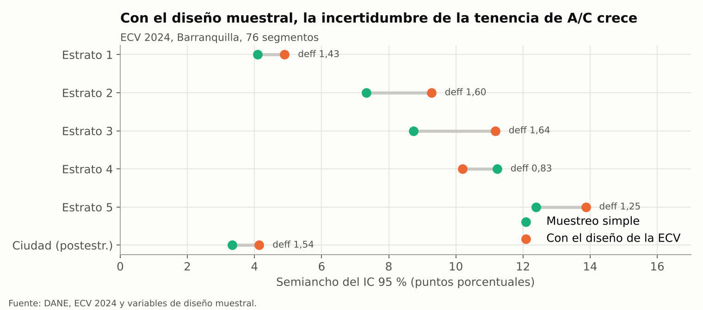
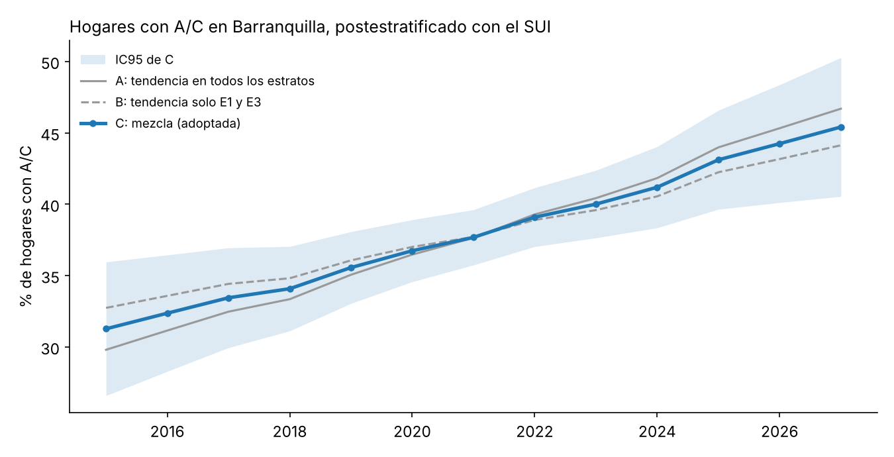
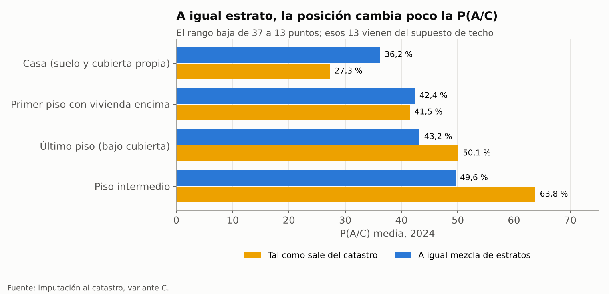

Ajustes v3: error de la encuesta, serie C, imputación y posición#
2. Efecto de diseño de la ECV 2024#
El error real de la tenencia de A/C es 1,5 veces mayor en varianza que el de un muestreo al azar hogar por hogar. La ECV no sortea hogares sueltos: sortea segmentos (grupos de manzanas) y encuesta varios hogares en cada uno, y los vecinos se parecen entre sí.
Cómo se calculó. El archivo «Variables diseño muestral» de la ECV 2024 trae el SEGMENTO de cada vivienda: 76 segmentos en Barranquilla, todos en un mismo estrato de diseño. Para una proporción ponderada p = Σ w·y / Σ w se usó la linealización de Taylor, con segmentos tratados como sorteados con reemplazo:
donde C = 76 segmentos. Para un estrato se usa la misma fórmula con y y w iguales a cero fuera del estrato (estimación por dominio). El efecto de diseño es deff = V(conglomerados) / V(muestreo simple), con V(muestreo simple) = p(1 − p)/n. Para la ciudad se aplicó a la suma postestratificada Σ W_e p_e, con W_e = suscriptores del SUI en diciembre de 2024.
Tenencia de A/C 2024 |
n hogares |
Segmentos |
p |
IC95 muestreo simple (pp) |
IC95 con diseño (pp) |
deff |
|---|---|---|---|---|---|---|
Estrato 1 |
250 |
26 |
12,4 % |
± 4,1 |
± 4,9 |
1,43 |
Estrato 2 |
161 |
22 |
34,2 % |
± 7,3 |
± 9,3 |
1,60 |
Estrato 3 |
125 |
23 |
45,8 % |
± 8,7 |
± 11,2 |
1,64 |
Estrato 4 |
52 |
12 |
78,2 % |
± 11,2 |
± 10,2 |
0,83 |
Estrato 5 |
38 |
6 |
81,3 % |
± 12,4 |
± 13,9 |
1,25 |
Estrato 6 |
20 |
4 |
100 % |
— |
— |
— |
Ciudad (postestratificada) |
646 |
76 |
41,4 % |
± 3,3 |
± 4,1 |
1,54 |


Figura 17 Semiancho del IC 95 % con y sin el diseño muestral.#
Para el ventilador el efecto es casi nulo (deff 0,98 en la ciudad); para la nevera es 1,45.
Las olas 2018–2023 y 2025 no se procesaron con su diseño; se les aplica deff = 1,5 dividiendo su n por 1,5.
El estrato 4 sale con deff < 1 por azar: con 12 segmentos ese cálculo es inestable.
3. Serie de tenencia de A/C 2015–2027 (variante C)#
Con la variante C, la ciudad pasa de 31,3 % de hogares con A/C en 2015 a 41,2 % en 2024 y 45,4 % en 2027. Se eligió porque la tendencia entre olas solo es clara en los estratos 1 y 3, y la variante C no obliga a decidir si existe en los demás.
En palabras simples
Las muestras de la ECV por estrato son pequeñas, así que la cifra cruda salta de un año a otro (estrato 4: 75 % en 2018, 53 % en 2019, 92 % en 2020). Por eso se usa una curva suavizada. La variante A supone que la tenencia sube a ritmo constante en todos los estratos; la B solo lo supone en E1 y E3, donde la subida es clara, y deja plano el resto. Como no se sabe cuál es la correcta, C toma el promedio de las dos y amplía la incertidumbre donde difieren (sobre todo 2015–2017 y 2026–2027). En 2019 la ciudad queda en 35,6 % frente a 33,3 % sin suavizar, sobre todo porque la curva corrige el 53 % atípico del estrato 4; en 2024 ambas coinciden (41,2 % y 41,4 %).
Datos. Tasa ponderada de hogares con A/C (P1077S11, factor FEX_C) por estrato en las olas 2018, 2019, 2021, 2022, 2023, 2024 y 2025 de la ECV en Barranquilla. La ola 2020 se excluye (encuesta en parte telefónica, año fuera de la calibración); 2015, 2016 y 2017 no traen municipio.
Dos ajustes por estrato (modelo lineal generalizado binomial, enlace logit, peso = n de hogares):
A: tendencia en los seis estratos y n sin corregir (la serie anterior).
B: tendencia solo donde es significativa, E1 (p = 0,03) y E3 (p = 0,007); nivel constante en E2, E4, E5 y E6 (p de la tendencia entre 0,39 y 0,53); n efectivo = n / 1,5 por el efecto de diseño.
En ambos, la covarianza de los coeficientes se multiplica por la sobredispersión φ = χ² de Pearson / grados de libertad (mínimo 1); para cada año, media m = logística(η) y desviación DE = m(1 − m)·EE(η) (método delta).
Mezcla C. Mitad A y mitad B, para cada estrato y año:
El último término agrega la distancia entre A y B a la incertidumbre. La Beta de cada celda se obtiene por momentos: α = m·k, β = (1 − m)·k, con k = m(1 − m)/DE² − 1. La ciudad es Σ W_e m_e con los suscriptores del SUI de diciembre de cada año (2026–2027 con los de 2025) y DE = √Σ W_e² DE_e².
Tenencia C, % (DE) |
E1 |
E2 |
E3 |
E4 |
E5 |
E6 |
|---|---|---|---|---|---|---|
2015* |
5,0 (1,9) |
25,3 (4,7) |
32,7 (4,6) |
68,1 (13,0) |
83,1 (9,8) |
95,5 (5,1) |
2017* |
6,3 (1,8) |
26,0 (3,6) |
36,0 (3,6) |
70,2 (9,1) |
84,2 (6,8) |
96,5 (2,5) |
2019 |
7,8 (1,5) |
26,7 (2,7) |
39,5 (2,5) |
72,2 (6,0) |
85,2 (4,5) |
97,2 (1,4) |
2021 |
9,7 (1,3) |
27,4 (2,0) |
43,0 (1,8) |
74,0 (4,8) |
86,1 (3,2) |
97,6 (1,3) |
2024 |
13,2 (2,0) |
28,6 (2,7) |
48,5 (2,6) |
76,4 (6,6) |
87,4 (3,7) |
98,1 (1,5) |
2025 |
14,7 (2,7) |
29,0 (3,3) |
50,3 (3,2) |
77,2 (7,5) |
87,7 (4,2) |
98,2 (1,6) |
2027* |
17,9 (4,5) |
29,8 (4,7) |
54,0 (4,5) |
78,5 (9,2) |
88,4 (5,2) |
98,3 (1,6) |
* años sin ola de la ECV. Todos los años 2015–2027, con α y β, están en Tenencia_AC_sensibilidad_AB.csv (filas con variante = C). Ejemplo, 2024: E1 Beta(37,3; 244,3), E4 Beta(30,7; 9,5).
La diferencia entre A y B en la ciudad llega a 2,9 puntos en 2015 y se reduce a 0,1 en 2021, el centro de los datos. La ciudad con C:


Figura 18 Variantes A, B y C para la ciudad.#
4. Probabilidad de A/C por vivienda del catastro (variante C)#
Con la variante C, 40,7 % de las 332.718 viviendas del catastro tendría A/C en 2024 (unas 135.400) y 35,7 % en 2019. Con la variante A daba 41,3 % y 35,2 %.
Procedimiento (igual al de la variante A; solo cambia la tasa objetivo):
Tasa objetivo p_e,t = media de la variante C para el estrato e y el año t.
Dentro del estrato, P(A/C | techo) = logística(a_e + b_techo), con b del modelo M2 de la ECV 2024 (techo + estrato): concreto 0; asbesto-cemento −1,061; zinc u otro −1,954.
Techo de cada vivienda: concreto si está en un edificio de 4 o más pisos (uso catastral «Apartamentos»); si no, la mezcla de techos de la ECV 2024 del estrato, descontando el concreto que ya ocupan los edificios altos.
El intercepto a_e se busca numéricamente (método de Brent) para que la media de las viviendas del catastro del estrato sea exactamente p_e,t.
2024, variante C |
E1 |
E2 |
E3 |
E4 |
E5 |
E6 |
|---|---|---|---|---|---|---|
Tasa objetivo |
13,2 % |
28,6 % |
48,5 % |
76,4 % |
87,4 % |
98,1 % |
Viviendas en edificio de 4+ pisos |
29,5 % |
7,3 % |
33,9 % |
69,4 % |
73,8 % |
84,2 % |
P(A/C), edificio de 4+ pisos |
23,9 % |
39,9 % |
63,3 % |
79,0 % |
89,2 % |
98,4 % |
P(A/C), vivienda de hasta 3 pisos |
8,8 % |
27,7 % |
40,9 % |
70,7 % |
82,3 % |
96,6 % |
Ciudad según el catastro, variante C (% de viviendas con A/C): 2015 32,3 · 2016 33,1 · 2017 34,0 · 2018 34,8 · 2019 35,7 · 2020 36,7 · 2021 37,6 · 2022 38,6 · 2023 39,6 · 2024 40,7 · 2025 41,7 · 2026 42,9 · 2027 44,0. Difiere un poco de la serie de la sección 3 porque aquí cada estrato pesa por sus viviendas del catastro y allá por sus suscriptores del SUI.
El estrato 1 queda forzado a la tasa de la ECV. Sin forzar, su P(A/C) en el catastro subiría unos 2 puntos (sensibilidad registrada).
La mezcla de techos es la de 2024 en todos los años: cambia el reparto dentro del estrato, no su total.
Archivo:
Catastro_PAC_por_anio_estrato_tipo_C.csv(unir por estrato y tipo de edificio).
5. Posición frente a la cubierta: lectura correcta#
La mayor parte de la diferencia de A/C entre posiciones se debe al estrato, no a la cubierta. Las casas con cubierta propia se concentran en los estratos 1 y 2, y los apartamentos intermedios en torres de estratos 4 a 6.
Cómo se separó. Para cada posición se calculó la P(A/C) media de 2024 (variante C) tal como sale del catastro y estandarizada: el promedio de la P(A/C) de esa posición dentro de cada estrato, ponderado por la mezcla de estratos de toda la ciudad. Si la posición no importara, las cuatro cifras estandarizadas serían iguales.
Posición (2024, variante C) |
P(A/C) tal como sale |
P(A/C) estandarizada por estrato |
|---|---|---|
Casa (suelo y cubierta propia) |
27,3 % |
36,2 % |
Primer piso con vivienda encima |
41,5 % |
42,4 % |
Último piso (bajo cubierta) |
50,1 % |
43,2 % |
Piso intermedio |
63,8 % |
49,6 % |
El rango baja de 37 a 13 puntos. Esos 13 puntos tampoco son un dato observado: salen de dos supuestos de la imputación, el efecto del techo del modelo M2 de 2024 y el techo de concreto para todo edificio de 4 o más pisos. El catastro no registra el material del techo ni el A/C.


Figura 19 P(A/C) media de 2024 por posición, variante C.#
Redacción sugerida para la tesis: «Tras la imputación, las casas con cubierta propia quedan con la menor probabilidad de A/C (27 % frente a 64 % en los pisos intermedios). La mayor parte de esa diferencia se debe a que se concentran en los estratos 1 y 2; el resto (unos 13 puntos a igual estrato) refleja el supuesto de techo liviano en las viviendas de hasta tres pisos y no una observación directa.»
6. Otros ajustes#
Estacionalidad del SUI con 2015–2025. El patrón no cambia al agregar 2015–2018. Alza = promedio de agosto y septiembre / promedio de febrero y marzo − 1, por año con al menos 10 meses sin bandera, luego promedio entre años.
Alza ago.–sep. vs feb.–mar. |
E1 |
E2 |
E3 |
E4 |
E5 |
E6 |
Total |
|---|---|---|---|---|---|---|---|
2015–2018 |
+10,4 % |
+17,1 % |
+22,8 % |
+28,8 % |
+28,0 % |
+25,3 % |
+19,1 % |
2019–2025 |
+11,1 % |
+16,2 % |
+23,9 % |
+27,6 % |
+29,8 % |
+28,9 % |
+19,0 % |
2015–2025 |
+10,9 % |
+16,5 % |
+23,5 % |
+28,0 % |
+29,1 % |
+27,6 % |
+19,0 % |
ECV 2015 (catálogo 419 del DANE). Trae departamento pero no municipio, así que no sirve para Barranquilla. Sí tiene el módulo de uso de energéticos con el tipo y las horas de A/C y ventilador (P5523–P5526), igual que la de 2019, pero solo a nivel del Atlántico.
SUI, estrato 3, diciembre de 2024. El consumo es normal (265 kWh por suscriptor), pero el valor facturado equivale a 449 COP/kWh, frente a 676–858 en los meses vecinos. Lo más probable es un crédito o una refacturación después de octubre de 2024, mes en que no se reportó consumo. Ese mes se usa para consumo y no para tarifa. Noviembre de 2024 (todos los estratos) puede incluir consumo atrasado de octubre. Ambos quedan marcados en la columna nueva bandera_revision del archivo del SUI.